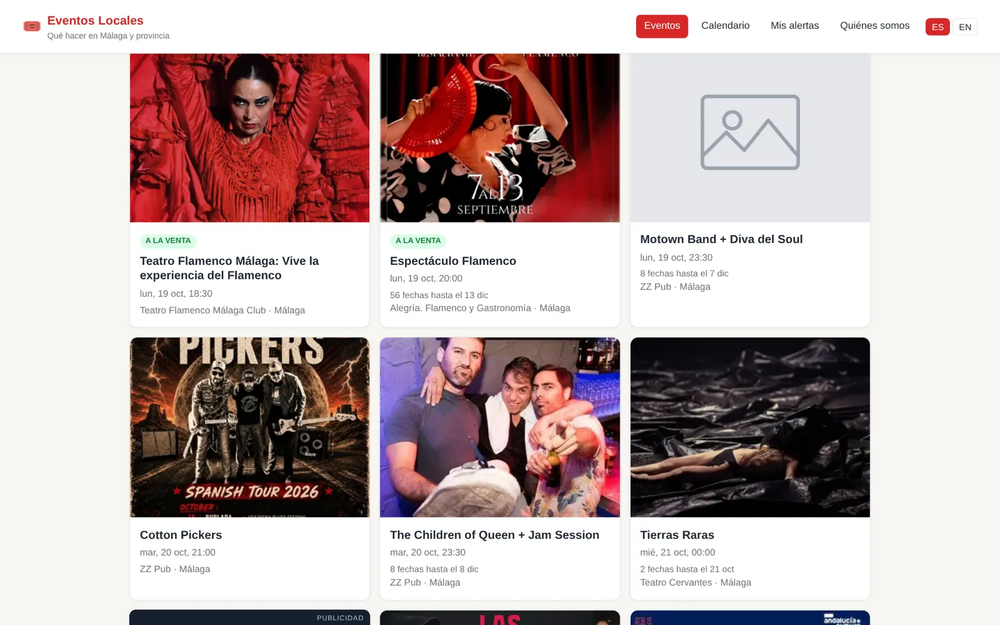
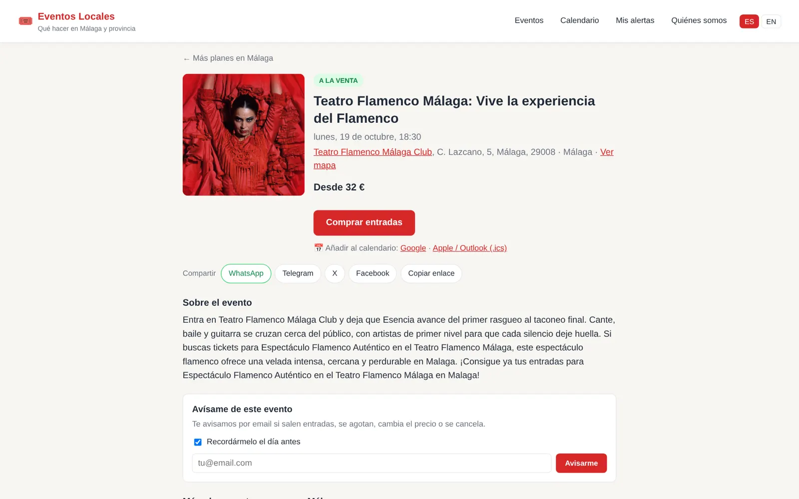
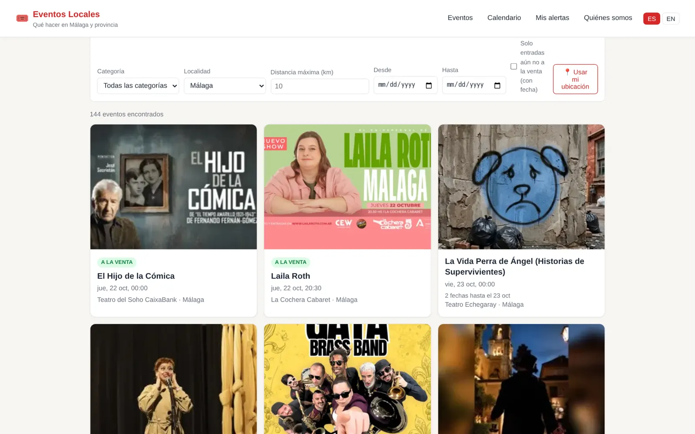
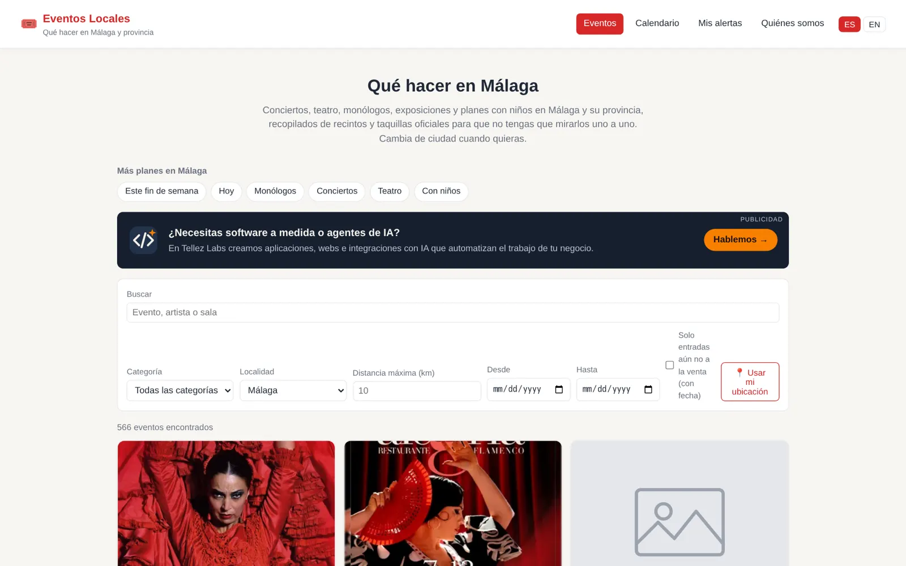

EventosLocales.net
Public product · Spanish and English · own domain, SEO and analytics
What's on in Málaga province, in one place. Every day a worker pulls events from theatres, clubs, town-hall agendas, Fever and Ticketmaster, works out which listings are the same show, groups a run of dates into one event, and tracks when tickets go on sale or sell out.
- Cross-source de-duplication by venue, date and fuzzy title, plus a daily merge job
- Server-rendered SEO heads, schema.org events and a sitemap for a React SPA
- Alerts, venue and artist follows, calendar files and per-event traffic stats
- Backend
- Python 3 · FastAPI · SQLAlchemy 2 async · Alembic
- Data
- PostgreSQL 16 + PostGIS · Redis
- Ingest
- Source connectors · Playwright · worker
- Frontend
- React · Vite · TypeScript · nginx SSI
- Ops
- Docker · Traefik · Cloudflare · Umami